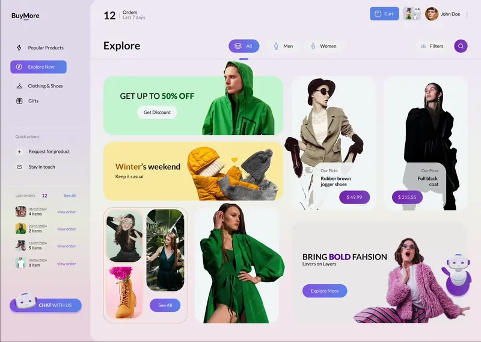
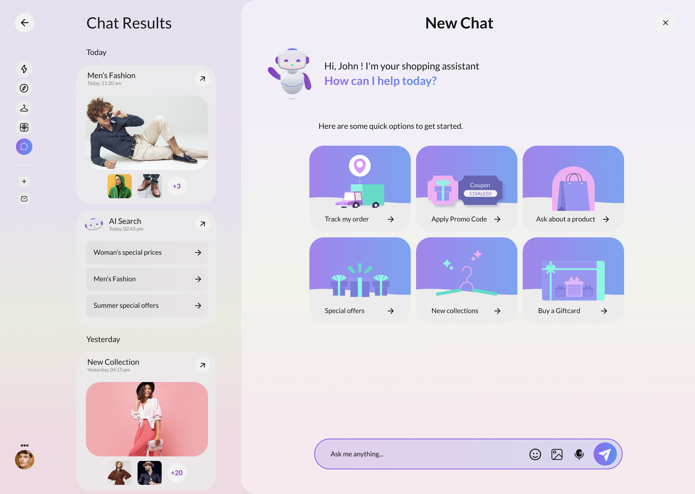
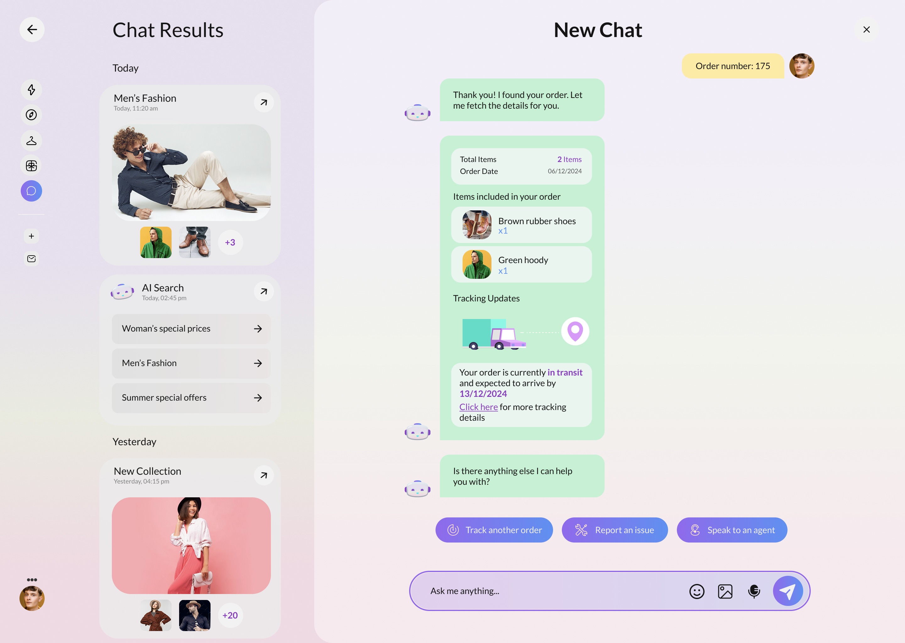
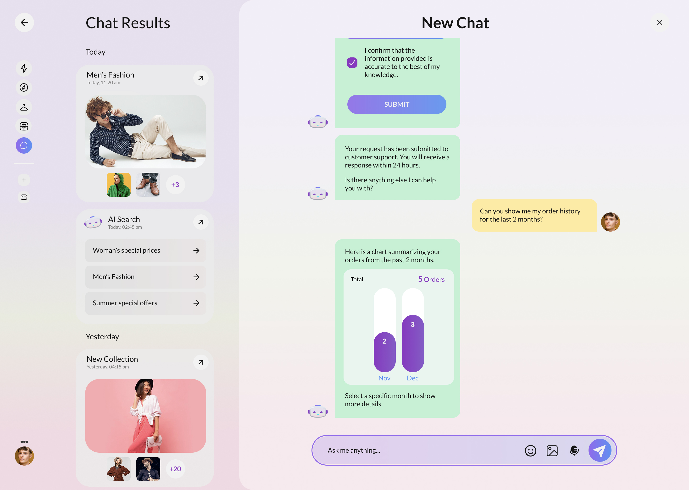
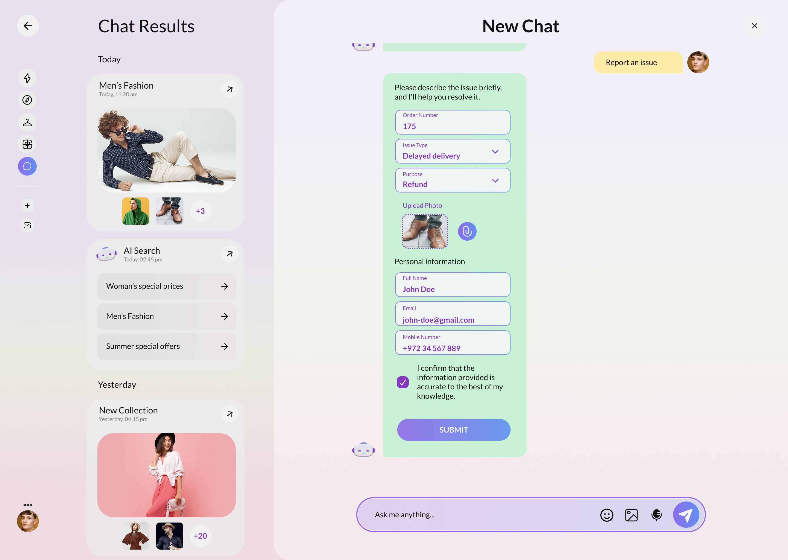

Gaia — shopping that answers back.
A conversational AI assistant woven into the BuyMore storefront. It tracks orders, applies promos, surfaces collections and resolves issues, turning support tickets and dead-end searches into a single, friendly chat.
A storefront with a brain
Shoppers don't want to dig through menus to track a parcel, find a promo or report a problem. They want to ask. Gaia turns the whole BuyMore experience into a conversation.
From a single "Chat with us" entry point, the assistant greets the customer with quick-start actions, then guides them through rich, interactive replies (order cards, tracking maps, month/week order charts and a structured issue form) without ever leaving the thread.
We owned the experience and the front-end: the dual-pane chat workspace, the quick-action launcher, every interactive bot card, and a soft, approachable visual language that sits comfortably inside the wider store.
Conversational commerce, end to end
Designed a dual-pane chat, history rail plus an active thread of rich, tappable bot replies.
Order summaries, a tracking map, drill-down order charts and a guided issue form, all inline.
Implemented the chat surface, quick actions, charts and form flows as a responsive React app.
A lavender-and-cream language with violet accents that reads friendly, not robotic.
From "Hi" to resolved
Gaia opens with quick options, then keeps the customer in flow, provide an order number and a tracking card animates in, with next-step actions ready underneath.

Every answer is a moment

A friendly welcome with six quick actions so customers never face an empty box.

An order card with items, a live tracking map and clear next-step buttons.

Month and week order charts the customer can tap to expand, right in the chat.

A guided form (issue type, photo upload and contact details) submitted without leaving the thread.
What makes Gaia helpful
Track orders, apply promos, ask about products, browse collections, buy a gift card.
Replies render as live cards: order summaries, maps, charts and forms, not flat text.
Order activity by month rolls down to weeks and individual orders on demand.
A results rail groups past threads by day so customers can pick up where they left off.
The Gaia palette
See Gaia hold
a conversation.
Walk through the storefront and the assistant: quick actions, tracking maps, order charts and the issue flow.
Back to the top